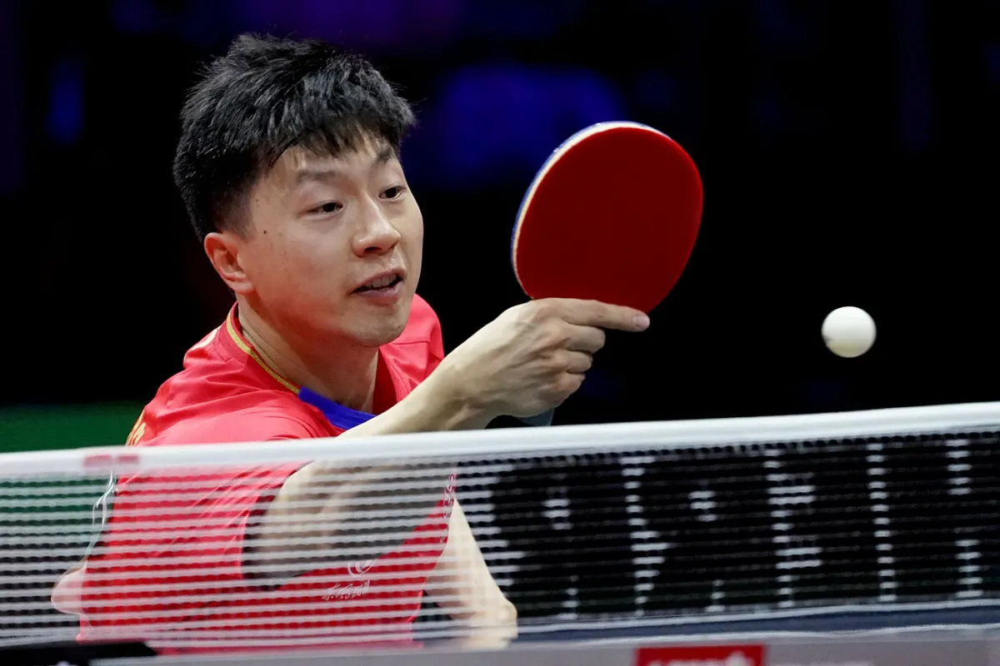
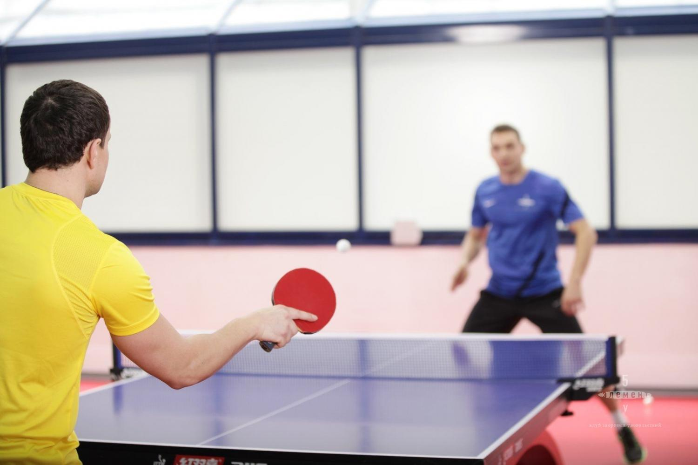

Информация о Пинг понге

Пинг-понг, также известный как настольный теннис, представляет собой популярную индивидуальную и командную спортивную игру, которая играется на специальных столах с мячом и ракетками. Этот вид спорта требует быстроты реакции, ловкости и хорошей координации движений. Пинг-понг является одним из наиболее распространенных рекреационных и соревновательных видов спорта во всем мире.
Основные характеристики пинг-понга:
Мяч:
Игра в пинг-понг проводится с маленьким легким мячом, который имеет округлую форму и выполнен из пластикового материала. Мячи различаются по цвету (обычно белые и оранжевые) и по степени жесткости.
Ракетки:
Игроки используют специальные ракетки, которые состоят из ручки и накладки (губки), обеспечивающей удар по мячу. Ракетки могут отличаться по форме, материалу и характеристикам губки.
Стол:
Игра в пинг-понг проводится на прямоугольном столе, разделенном сеткой пополам. Стол имеет определенные размеры и высоту над землей. Он разделен на две половины с помощью сетки, которая облегчает игру в двойках.
Правила игры:
Цель игры - отбить мяч через сетку так, чтобы он пересек поле противника и не был отбит обратно. Игроки чередуются в ударах. Игра идет до тех пор, пока мяч остается в движении и один из игроков не совершит ошибку.
Очки:
Игроки зарабатывают очки, когда соперник не смог вернуть мяч через сетку или совершил ошибку в игре. Матч в пинг-понге может состоять из нескольких партий (обычно 3 или 5), и выигрывает тот, кто первым наберет определенное количество очков.
Вариации игры:
Помимо классической версии пинг-понга, существует множество вариаций этой игры, таких как парный теннис, игра с использованием различных правил, брейн-тренировки и другие.
Пинг-понг является как конкурентной спортивной дисциплиной, так и популярным вариантом активного отдыха среди друзей и семьи. Спортивный пинг-понг организован на различных уровнях, от любительских до профессиональных, и даже является олимпийским видом спорта.
советы

Чтобы стать пинг-понгистом, вам потребуется усилия, тренировки и практика. Вот несколько шагов, которые помогут вам начать свой путь в этом направлении:
Интерес и решение:
Убедитесь, что вы действительно заинтересованы в игре в пинг-понг. Проявите решимость и преданность этому виду спорта.
Ознакомьтесь с правилами:
Изучите основные правила игры в пинг-понг, чтобы понимать, как проходят матчи и как зарабатываются очки.
Оборудование:
Приобретите хорошую настольную ракетку, мячи и, возможно, сетку для настольного тенниса. Выбор ракетки зависит от ваших предпочтений и уровня игры.
Поиск тренировочных партнеров:
Найдите друзей или партнеров, с которыми вы сможете регулярно тренироваться. Игра вдвоем помогает улучшать навыки и реакцию.
Присоединение к клубу:
Если у вас есть местный клуб по настольному теннису, присоединитесь к нему. Клубы часто предоставляют тренировки, обучение и возможности для соревнований.
Регулярные тренировки:
Разработайте регулярное расписание тренировок. Отрабатывайте разнообразные навыки, включая удары, подачи, приемы и тактику.
Техника ударов:
Освойте основные техники ударов, такие как форхенд, бэкхенд, блок, подача и т.д. Правильная техника ударов очень важна для улучшения вашей игры.
Координация и реакция:
Развивайте координацию глаз и рук, а также улучшайте реакцию на движение мяча.
Физическая подготовка:
Пинг-понг требует хорошей физической формы. Разработайте тренировочную программу, которая включает кардио и упражнения для силы и гибкости.
Участие в соревнованиях:
Как только вы будете готовы, принимайте участие в местных соревнованиях и турнирах. Соревнования помогут вам проверить свои навыки в реальной игровой обстановке.
Анализ и самоулучшение:
После тренировок и соревнований анализируйте свою игру. Определите свои сильные и слабые стороны и работайте над улучшением.
Терпение и настойчивость:
Улучшение в пинг-понге - постепенный процесс. Будьте терпеливы и настойчивы, даже если результаты не приходят сразу.
Учеба у опытных игроков:
Смотрите игры профессиональных пинг-понгистов, изучайте их подход к игре и учитеся от опыта.
Здоровый образ жизни:
Поддерживайте здоровый образ жизни, ведь физическая подготовка, питание и сон важны для достижения успехов в спорте.
Продолжайте развиваться:
Пинг-понг - это непрерывный процесс самосовершенствования. Продолжайте тренироваться, изучать и совершенствоваться, чтобы стать успешным пинг-понгистом.